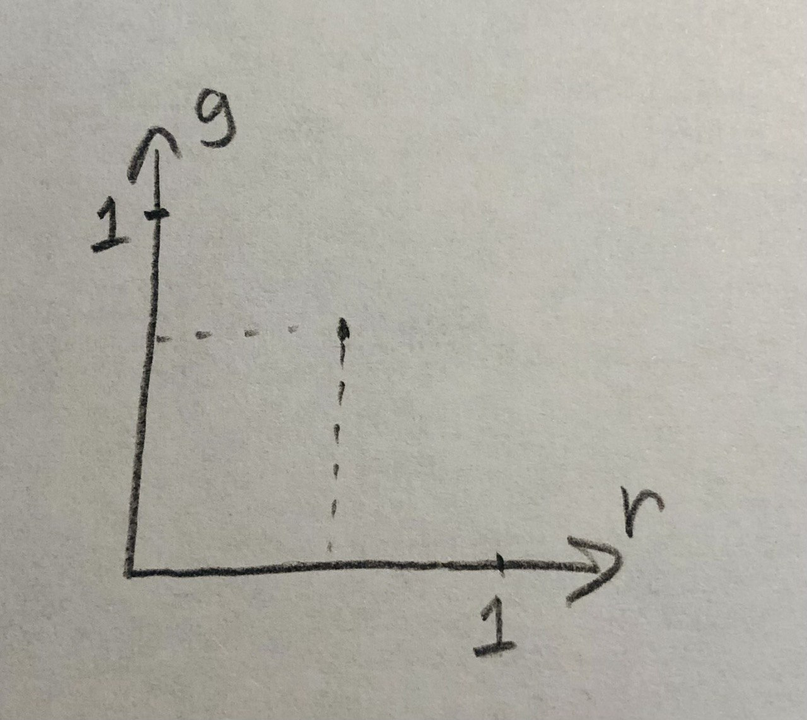

Привет!
Меня зовут София. Я - CSS инженер.
Мы будем говорить:
- о цвете вообще
- о цвете в мониторах
- о цвете в CSS
Цвет мы определем с помощью глаз

Цвет связан со светом.
Мы знаем про свет:
- Длина волны
- Частота
- Мощность
- Cпектральный состав
Что такое спектральный состав?
- зависомость интенсивности излучения от длиный волны.

Цвет — это свойство излучения?
Попробуем описать цвет через спектр.
Монохромный цвет:

Попробуем описать цвет через спектр.
Немонохромный цвет:

Почему так нельзя?
1. Необходимо записывать не меньше 35 числовых значений спектра для описания одного цвета.

Почему так нельзя?
2. Cпектры некоторых идентичных по цвету образцов ведут себя по разному.

Цвет — это свойство излучения?
Цвет - реакция человеческго глаза на излучение
Человеческий глаз
Колбочки различают цвета, палочки - уровень освещенности.

Человеческий глаз: колбочки

Человеческий глаз: колбочки

Цвета смещиваются
Поэтому этими тремя рецепторами мы можем воспринять любой цвет

Попробуем чуть упростить
Возьмён три цвета. Таких, что ни один из них не воспроизводилось смесью двух других. И сделаем визуальный колориметер.

Color = R * V1 + G * V2 + R * V3
Не для всех цветов так можно, поэтому...

Color - R * V1 = G * V2 + R * V3
Собрали графики для монохромных цветов.

Теперь мы можем определять цвет так

Добавим линейных преобразований
Добавим линейных преобразований

Добавим линейных преобразований

Добавим линейных преобразований

Добавим линейных преобразований

Локус

Локус

Локус
Нужно выбрать базовые цвета

Вспомним про колбочки - 1:0,22:17

Начертим плоскость равной яркости

Опустим ее ниже

Алихна

Теперь можно выбрать цвета

CIE XY

Как мы можем воспроизвести цвет, который видим?
- Найти пигмент и сделать краску.
- Найти источник света такого же цвета.
- Найти несколько источников цвета и смешать их излучение
Найти несколько источников цвета и смешать их излучение

Как устроен пиксель?
- источник света нужного цвета
- возможность делать пиксель нужно прозрачности
Нужно выбрать базовые цвета

Нужно выбрать базовые цвета
Хорошие первичные цвета - это стимулы, которые максимализируют разницу между
ответами колбочек сетчатки человека на свет с разными длинами волн
и тем самым образуют большой цветной треугольник .
Хорошие фильтры - сложно.
Фильтр это - ...
- цветное стеклышко
- интерференция в тонких плёнках
Чем бы намазать стеклышко, чтобы иметь нужный спектр пропускания?
Это коммерческая тайна.
Цветовой охват
- это множество цветов, которые может образить монитор.
Зависит от выбора базовых цветов.
Большинство мониторов раньше имело охват sRGB
sRGB

Adobe
RGB

DCI-P3

Как это всё связано с css???
Как задать цвет?
На любом множестве цветов (в любом охвате) нам нужно как-то определить конкретный.
Такой способ определения цвета называется цветовым пространством.
Чуть глубже в термины!
Цветовое пространство
Пространство - это...
- точка отсчета
- несколько осей
- единичный отрезок
Как задать цвет в CSS?
ключевые слова, rgb(), hsl(), hwb() |
lab(), lch() |
device-cmyk() |
color() |
Почему я сгруппировала их так?
Как задать цвет в CSS?
ключевые слова, rgb(), hsl(), hwb() |
sRGB |
lab(), lch() |
CIE LAB |
device-cmyk() |
CMYK |
color() |
можно выбрать |
Потому что они по разному отображаются.
А теперь поговорим про каждый способ подробнее.
Ключевые слова
1. transparent - прозрачный черный sRGB
Ключевые слова
1. currentcolor - значения свойства color для того же элемента.
<div>Text</div>
<style>
div {
color: red;
border: 1px solid currentcolor;
}
</style>
Ключевые слова
2. Именованные цвета

rgb()
/*
* @param {<number[0,255]> | <percentage>} --red Красный канал
* @param {<number[0,255]> | <percentage>} --green Зелёный канал
* @param {<number[0,255]> | <percentage>} --blue Синий канал
* @param {<number[0,255]> | <percentage>} [--alpha: 100%] Прозрачность
*/
color: rgb (var(--red) var(--green) var(--blue) / var(--alpha));
rgb()
Новый синтаксис
color: rgb (var(--red) var(--green) var(--blue) / var(--alpha));
Средний синтакис
color: rgb (var(--red), var(--green), var(--blue), var(--alpha));
Старый синтакис
color: rgb (var(--red), var(--green), var(--blue));
color: rgba (var(--red), var(--green), var(--blue), var(--alpha));
hex - то же самое
Особая форма записи rgb с помощью шестнадцатеричных чисел.
6 символов:
#ffffff
8 символов:
#ffffffff
3 символа:
#fff
6 символа:
#ffff
HSL()
Повернём rgb-куб в полярные координаты.
картинка
Hue
Тон цвета, представленный в виде угла цветового круга.
Saturation
Насыщенность цвета
Lightness
«Светлота» цвета
HSL()
А зачем? Потому что это удобно.
картинка
HSL()
/*
* @param {<number> | <angle>} --hue Оттенок, угол цветового круга
* @param {<percentage>} --saturation Насыщенность
* @param {<percentage>} --lightness Яркость
* @param {<number> | <percentage>} [--alpha: 100%] Прозрачность
*/
color: hsl (var(--hue) var(--saturation) var(--lightness) / var(--alpha));
HWB()
Повернём rgb-куб в другие полярные координаты.
картинка
Hue
Тон цвета, представленный в виде угла цветового круга.
Whiteness
Количество белого в цвете
Blackness
Количество черного в цвете
HWB()
А зачем? Потому что это удобно

HWB()
/*
* @param {<number> | <angle>} --hue Оттенок, угол цветового круга
* @param {<percentage>} --whiteness Белизна
* @param {<percentage>} --blackness Чернота
* @param {<number> | <percentage>} [--alpha: 100%] Прозрачность
*/
color: hwb (var(--hue) var(--whiteness) var(--blackness) / var(--alpha));
LAB()
Система, разномерная для человеческого глаза

A
От красного до зеленого
LAB()
/*
* @param {<percentage>} --lightness Яркость CIE
* @param {<number>} --a От зеленого до красного
* @param {<number>} --b От синего до желтого
* @param {<number> | <percentage>} [--alpha: 100%] Прозрачность
*/
color: lab (var(--lightness) var(--a) var(--b) / var(--alpha));
LAB()
А зачем? Эта система разномерна для человеческого глаза.
LCH()
CIE LAB в полярных координатах

HUE
Угол цветового круга (другого!)
LCH()
/*
* @param {<percentage>} --lightness Яркость CIE
* @param {<number[0,132]>} --chroma Количество цвета
* @param {<number> | <angle>} --hue Оттенок, угол цветового круга
* @param {<number> | <percentage>} [--alpha: 100%] Прозрачность
*/
color: lch (var(--lightness) var(--chroma) var(--hue) / var(--alpha));
CMYK
Простраснство оперирует смешением не цветов, а типографских красок.
color()
Можно управлять цветовым пространство рендеринга.
color()
/*
* @param {<ident> | <dashed-ident>} --color_space Имя пространства
* @param {<number[0,1]>} --red Красный канал
* @param {<number[0,1]>} --green Зелёный канал
* @param {<number[0,1]>} --blue Синий канал
* @param {<number> | <percentage>} [--alpha: 100%] Прозрачность
*/
color: color (var(--color_space) var(--red) var(--green)
var(--blue) / var(--alpha));
color()
color(sRGB 1 0 0)
color(display-p3 1 0 0)
color(rec2020 1 0 0)
Out Of Gamut
Мы можем задать цвет, который не может показать это устройство.
Презентация сделана с помощью Shower